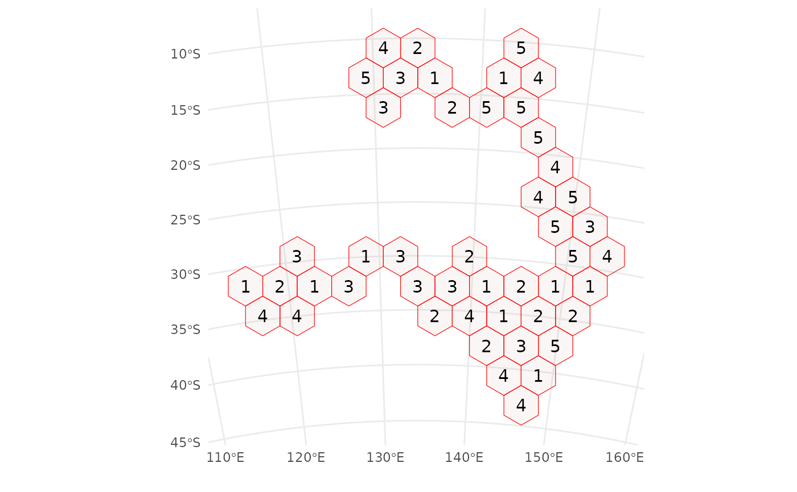
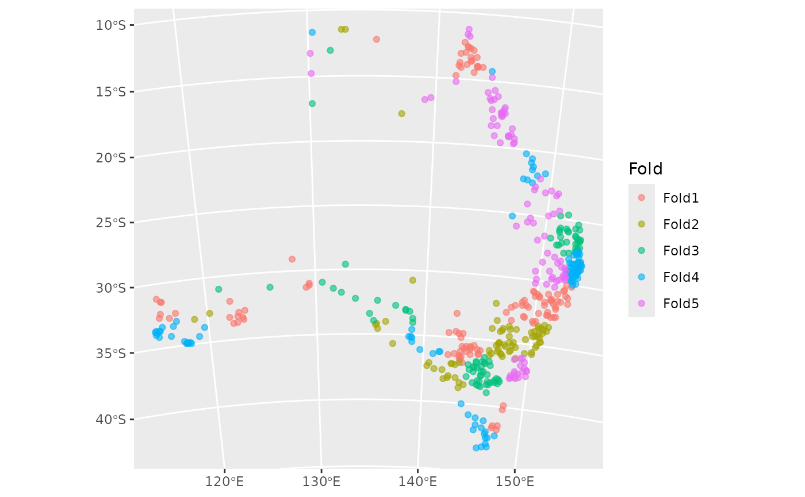

Convert an object created with blockCV to an rsample object
Source: R/blockcv2rsample.R
blockcv2rsample.RdThis function creates objects created with blockCV to rsample objects
that can be used by tidysdm. BlockCV provides more sophisticated sampling
options than the spatialsample library. For example, it is possible to
stratify the sampling to ensure that presences and absences are evenly
distributed among the folds (see the example below).
Examples
# \donttest{
library(blockCV)
#> blockCV 3.1.4
points <- read.csv(system.file("extdata/", "species.csv", package = "blockCV"))
pa_data <- sf::st_as_sf(points, coords = c("x", "y"), crs = 7845)
sb1 <- cv_spatial(
x = pa_data,
column = "occ", # the response column to balance the folds
k = 5, # number of folds
size = 350000, # size of the blocks in metres
selection = "random", # random blocks-to-fold
iteration = 10
) # find evenly dispersed folds
#>
|
| | 0%
|
|======= | 10%
|
|============== | 20%
|
|===================== | 30%
|
|============================ | 40%
|
|=================================== | 50%
|
|========================================== | 60%
|
|================================================= | 70%
|
|======================================================== | 80%
|
|=============================================================== | 90%
|
|======================================================================| 100%
#> train_0 train_1 test_0 test_1
#> 1 172 207 85 36
#> 2 218 202 39 41
#> 3 218 192 39 51
#> 4 217 171 40 72
#> 5 203 200 54 43

sb1_rsample <- blockcv2rsample(sb1, pa_data)
class(sb1_rsample)
#> [1] "spatial_rset" "rset" "tbl_df" "tbl" "data.frame"
autoplot(sb1_rsample)

# }